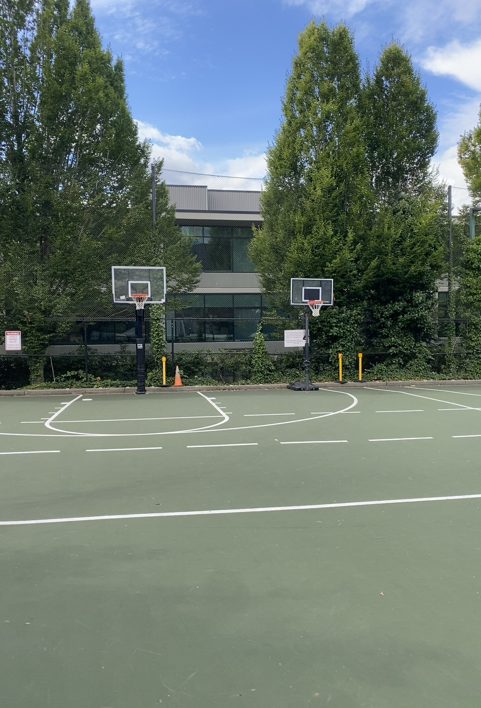

Home

I am using a monochromatic color scheme. I am trying to create a simple design with soft, clean colors. Even though it's green, I want it to feel warm. The subtle greens represent nature. They also represent rest and security